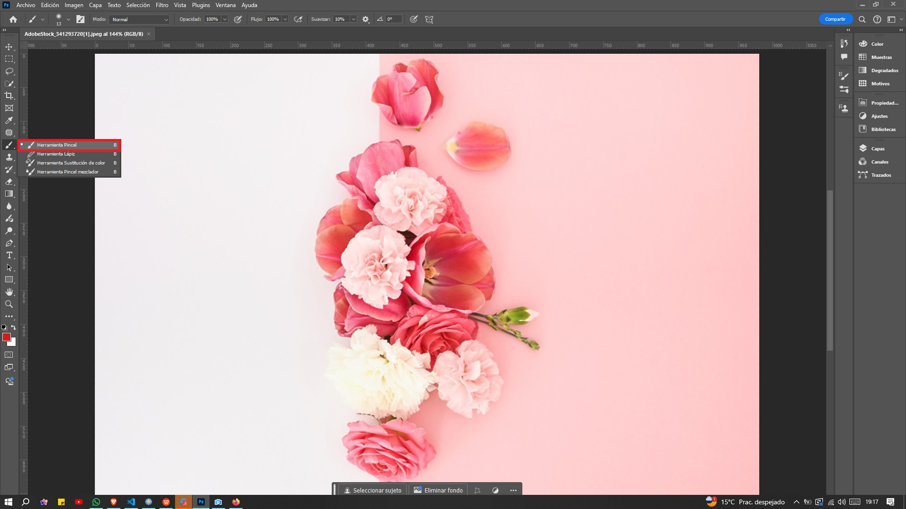
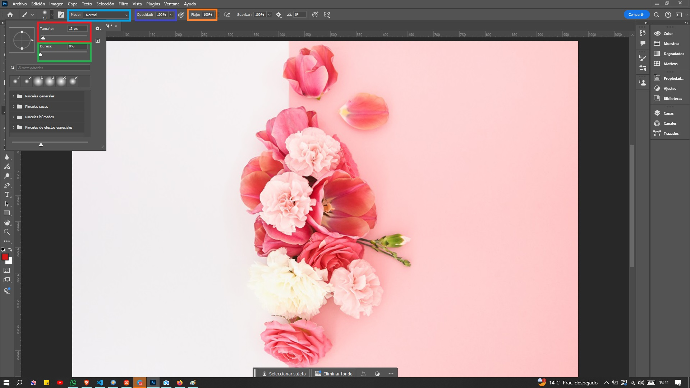
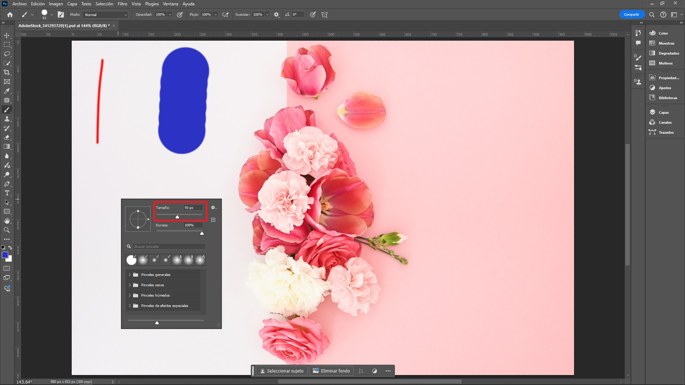
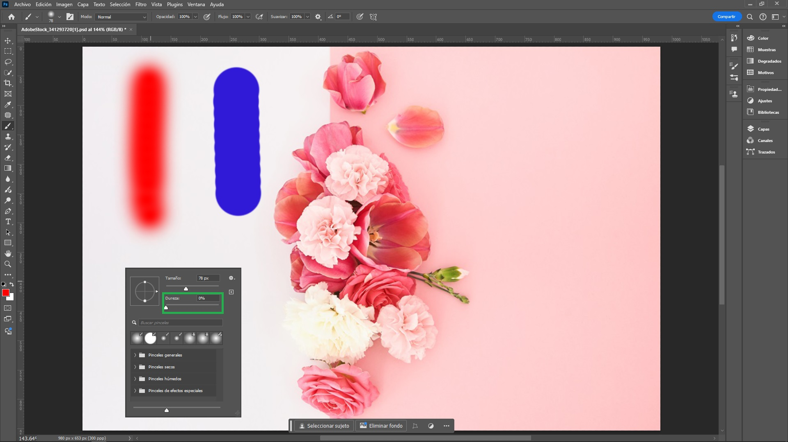
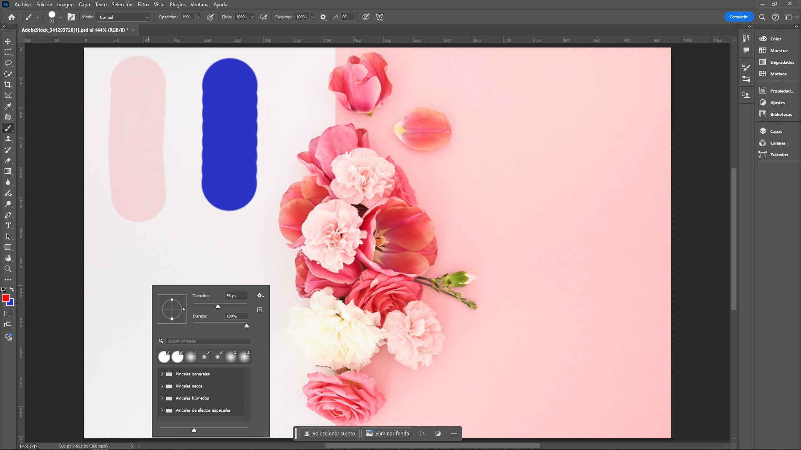

Uso de Pinceles
Introducción
Los pinceles en Photoshop son herramientas sumamente versátiles que permiten crear una amplia variedad de efectos, desde trazos básicos hasta texturas y detalles complejos. Son fundamentales para múltiples tareas dentro del software, incluyendo pintura digital, dibujo, retoque fotográfico, creación de sombras, efectos de iluminación y diseño gráfico en general. Además, Photoshop ofrece la posibilidad de personalizar los pinceles, ajustando parámetros como el tamaño, la opacidad, el flujo y la dureza, e incluso permite la importación y creación de nuevos pinceles para ampliar aún más las opciones creativas.
Herramienta Parche (Patch Tool)
¿Qué Son los Pinceles en Photoshop?
Los pinceles digitales en Photoshop son análogos a las herramientas de dibujo tradicionales, como lápices o pinceles reales, pero en un formato virtual. Cada pincel digital posee atributos únicos, incluyendo tamaño, forma, dureza y opacidad. Estas características permiten al usuario crear una amplia variedad de trazos y efectos, ofreciendo un control preciso sobre el aspecto final de la obra digital.
Tipos de Pinceles y sus Usos
- Pinceles básicos: Son los pinceles predeterminados que vienen con Photoshop. Son ideales para pintar y dibujar de forma tradicional.
- Pinceles de forma: Tienen formas personalizadas, como estrellas, flores o letras. Se utilizan para crear elementos decorativos o patrones.
- Pinceles de textura: Simulan texturas reales, como pinceladas de acuarela, óleo o pastel. Son perfectos para crear efectos artísticos y realistas.
- Pinceles de dispersión: Crean patrones dispersos de puntos, líneas o formas. Se utilizan para crear efectos especiales, como salpicaduras de pintura o estrellas.
Selección de Pinceles
- Pincel Básico: Photoshop incluye una amplia variedad de pinceles preestablecidos, desde pinceles redondos y suaves hasta texturizados y especiales.
- Pinceles Personalizados: Además de los preestablecidos, es posible crear o descargar pinceles personalizados para lograr efectos específicos. Para importar un pincel, basta con hacer clic en el menú de pinceles y seleccionar "Importar pinceles".
Selección de la Herramienta Pinceles
- Esta herramienta esta en la barra de herramientas principal, generalmente representada por un pincel. 
- En la barra de opciones, se verá una amplia variedad de pinceles. Hacer clic en la flecha pequeña para desplegar la lista completa y seleccionar el que más convenga. 
- La forma rápida de seleccionarla es presionando la tecla b en el teclado.
- Otra forma de acceder a este menú es haciendo clic con el botón derecho del ratón.
Configuración del Pincel
- Tamaño: Define el ancho del trazo, en la imagen, el trazo rojo tiene un ancho de 5 px, mientras que el trazo azul tiene un ancho de 93 px. 
- Dureza: La dureza determina la nitidez o suavidad de los bordes del trazo. En la imagen, el trazo rojo tiene una dureza del 0%, mientras que el trazo azul presenta una dureza del 100%. 
- Opacidad: Controla la transparencia del trazo, En la imagen, el trazo rojo tiene una opacidad del 10%, mientras que el trazo azul tiene una opacidad del 100%. 
- Flujo: Regula la cantidad de pintura que se aplica en cada trazo.
- Modo de fusión: Permite combinar el color del pincel con el color de fondo de diferentes maneras.
Pinceles Especiales
Photoshop ofrece una variedad de pinceles especiales, como se detalla a continuación:
- Pinceles Generales: Son herramientas versátiles que se utilizan para una amplia gama de tareas de pintura y retoque. Estos pinceles vienen preinstalados con el software y cubren necesidades básicas de diseño y edición.
- Pinceles Secos: Son una categoría especial de pinceles que emulan el efecto de un pincel tradicional con poca pintura o tinta, similar a cómo se comportaría un pincel seco en el mundo real. Este tipo de pincel permite crear trazos texturizados, irregulares, y con un acabado más áspero, que es ideal para simular técnicas de pintura como el óleo seco, la tiza, o el carboncillo.
- Pinceles Húmedos: Son una categoría de pinceles que simulan el efecto de la pintura húmeda, permitiendo crear texturas y transiciones de color que imitan el comportamiento de los medios tradicionales, como la acuarela o la pintura al óleo. Estos pinceles son especialmente útiles para artistas digitales que buscan un estilo más orgánico y fluido.
- Pinceles de Efectos Especiales: son herramientas diseñadas para crear una variedad de efectos visuales que pueden mejorar significativamente una imagen o diseño. Estos pinceles son particularmente útiles para artistas digitales y diseñadores gráficos que buscan añadir un toque único y creativo a su trabajo.
Color Primer Plano y Fondo
En Photoshop, la herramienta de color de primer plano y fondo se utiliza para seleccionar los colores que se aplicarán a las herramientas de pintura y al relleno:
- Colores de Primer Plano y Fondo:
- Colores de Primer Plano: Este color se utiliza para la pintura, el texto y las herramientas de dibujo. Se muestra en la parte superior de la barra de herramientas.
- Colores de Fondo: Este color se utiliza para el fondo, como el relleno de una selección o un fondo de capa. Se muestra justo debajo del color de primer plano.
- Seleccionar Colores:
- Cuadro de Color: Haciendo clic en el cuadro de color de primer plano o de fondo (ubicado en la barra de herramientas), se abrirá el selector de color. Aquí puedes elegir un color de la paleta o ingresar un valor hexadecimal o RGB específico.
- Valores Rápidos: Al hacer doble clic en el cuadro de color de primer plano, se abre el selector donde puedes ver y ajustar los valores.
- Restablecer Colores: Para restablecer los colores a los predeterminados (negro para primer plano y blanco para fondo), puedes hacer clic en la tecla de atajo d en el teclado.
- Invertir Colores: Para invertir los colores de primer plano y fondo, presiona la tecla de atajo x. Esto es útil cuando deseas cambiar rápidamente entre los dos colores seleccionados.
- Uso en Herramientas de Pintura: Al usar herramientas como el Pincel o el Relleno, el color de primer plano se aplicará donde se haga clic o se arrastre, mientras que el color de fondo se utilizará si se necesita borrar o aplicar un relleno.
- Ejemplo de Uso: Si se desea pintar un objeto en un color específico, seleccionar ese color en el cuadro de primer plano. Si luego se decide que se necesita un fondo diferente, simplemente cambiar el color de fondo y continuar trabajando.